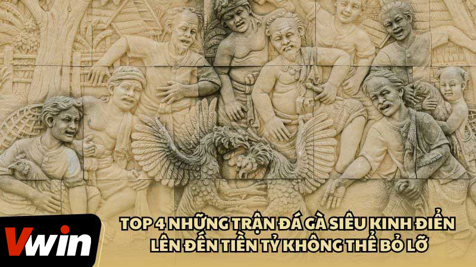
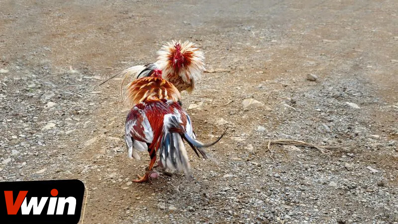
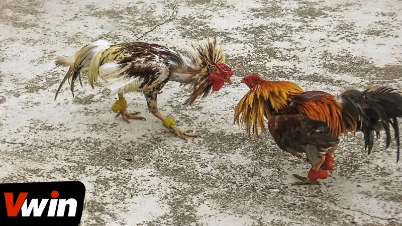
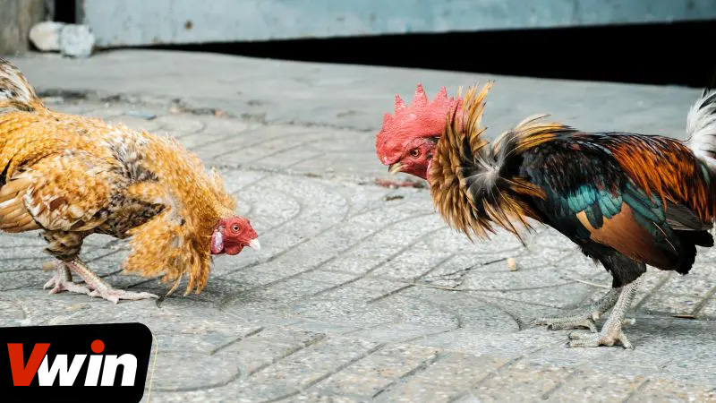
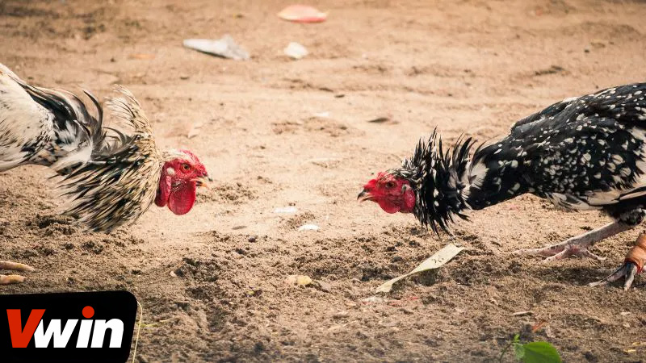
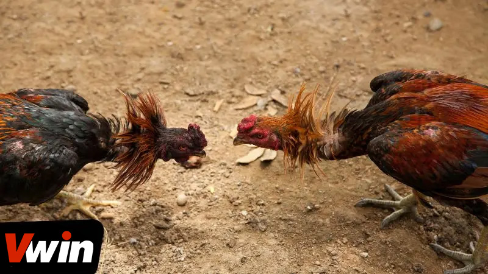

.png)
ĐÃ ĐĂNG TRÊN TRÊN THÁNG BA 5, 2024 BỞI Vwin
Những trận đá gà siêu kinh điển với giá trị cược lên tới hàng tỷ đồng luôn thu hút sự quan tâm đặc biệt từ giới mộ điệu. Đây không chỉ là sân khấu cho những cuộc chiến quyết liệt, mà còn là cơ hội để người chơi thể hiện niềm đam mê và khả năng phán đoán của mình. Hãy cùng chúng tôi tìm hiểu về những trận đá gà đình đám, nơi mà sự kịch tính và giá trị cược lớn tạo nên những phút giây hồi hộp và đầy cảm xúc.
Những trận đá gà siêu kinh điển với giá trị lên tới hàng tỷ đồng luôn khiến cho những người yêu thú cưng không thể ngồi yên. Liệu sự hội ngộ của những chiến kê này có thật sự hấp dẫn đến mức làm cho thị trường cá cược gà nổi sóng? Khám phá ngay 3 lợi ích sau đây, bạn sẽ tìm ra câu trả lời.
Trong giới gà, không thể phủ nhận rằng những chiến kê tham gia trận đấu với giải thưởng lớn là những người nghệ sĩ tài ba nhất. Ngoài việc có hình dáng đẹp và sức mạnh ấn tượng, kỹ thuật ra đòn của họ khiến người xem không thể không ngạc nhiên. Đây chính là những “thần đồng” mà các thầy huấn luyện đã dành nhiều công sức để nuôi dưỡng và rèn luyện. Không gì thú vị bằng việc thưởng thức những cú đánh độc đáo mà các chiến kê thể hiện trong trận đấu. Thậm chí chỉ một cú đánh duy nhất cũng có thể khiến đối thủ ngã gục ngay lập tức.
Những trận đá gà siêu kinh điển với giá trị hàng tỷ đồng là nơi mà các thầy huấn luyện gà có thể thể hiện sự tinh hoa và khéo léo trong việc chăm sóc và huấn luyện gà chiến của họ. Gà chiến xuất sắc càng chứng tỏ được kỹ năng huấn luyện tuyệt vời của các thầy huấn luyện. Trong cộng đồng đá gà, đây là cách để thể hiện đẳng cấp và uy tín, mà bất kỳ ai theo đuổi con đường này cũng mong muốn đạt được.
Lý do kê thủ luôn mong chờ những trận đá gà tiền tỷ
Kết quả của những trận đá gà siêu kinh điển với số tiền khổng lồ không chỉ mang lại phần thưởng khủng cho các sư kê, mà còn là nơi lý tưởng để những kê thủ kiếm lời. Bạn không chỉ được thưởng thức những trận chiến gay cấn trong thế giới gà, mà còn có cơ hội rinh tiền từ những trận đấu đầy kịch tính này. Khi đặt cược càng cao, phần thưởng bạn nhận được cũng sẽ lớn hơn. Lợi ích hấp dẫn này khiến hàng triệu người chơi không ngần ngại đầu tư vào những trận đá gà nóng bỏng này.
Thật khó có thể phớt lờ trước những trận đá gà siêu kinh điển với số tiền khổng lồ và hấp dẫn không ngừng. Các tay kê thủ muốn chiêm ngưỡng cơ hội hoàn mỹ trước những cuộc chiến huyền thoại này và hy vọng kiếm được tiền sau khi kết thúc trận đấu. Hãy cùng chứng kiến bốn trận gà với số tiền khủng làm lay động cả làng gà ngay sau đây:
Trong văn hóa cá cược đá gà tại Việt Nam, Phúc Bình Dương, thường được biết đến với biệt danh Phúc Barca, là một cái tên không thể không nhắc tới. Ông là một trong những sư kê hàng đầu, với đội hình chiến kê có khả năng thống trị các sàn đấu gà. Khả năng của Phúc Bình Dương trong việc nâng cao vị thế qua cá cược đá gà là điều được biết đến rộng rãi, đặc biệt qua những trận đấu gà tiền tỷ đầy gay cấn.
Trong số những trận đá gà siêu kinh điển nổi tiếng, trận đấu gà cựa sắt với giá trị 5 tỷ giữa chiến kê của Phúc Bình Dương và chiến kê của anh Hiển Long Xuyên là một trận không thể quên. Trong cuộc so tài này, chiến kê của Phúc Bình Dương được đặt ở kèo Wala với tỷ lệ -0.9, trong khi chiến kê của anh Hiển ở kèo Meron với tỷ lệ 0.7.
Cuộc đấu diễn ra chỉ trong vòng 1 phút 30 giây, nhưng đã để lại ấn tượng sâu sắc với những pha đòn tấn công sắc bén. Cuối cùng, chiến kê của anh Hiển Long Xuyên đã giành chiến thắng, khẳng định vị thế của mình trên sàn đấu.
Trận cược đá gà 5 tỷ giữa Hiển Long Xuyên và Phúc Bình Dương
Trong năm 2022, một trong những trận đá gà siêu kinh điển tiền tỷ thu hút sự chú ý lớn nhất diễn ra giữa sư kê Mít Trà Cú từ Trà Vinh và Phúc Barca, được mệnh danh là “vua” gà đá ở Bình Dương. Đặc biệt, cuộc đối đầu này bắt đầu với số tiền cược 2 tỷ đồng nhưng sau đó đã tăng vọt lên 15 tỷ, cho thấy mức độ quan tâm và sự hấp dẫn từ cộng đồng cá cược.
Cuộc chiến đáng giá 15 tỷ đồng này được tổ chức tại casino 67, một địa điểm phổ biến cho các trận đá gà tại Thomo. Trong trận này, gà xanh của Mít Trà Cú và gà chuối của Phúc Barca lần lượt đại diện cho kèo Wala và Meron. Kết quả là chiến thắng đã thuộc về chiến kê gà xanh của Mít Trà Cú, mang về chiến thắng lớn ở kèo Meron. Sự kiện này không chỉ khiến tên tuổi của Mít Trà Cú được biết đến rộng rãi khắp cả nước mà còn khiến cộng đồng kê thủ ngưỡng mộ về đội hình “linh kê” mà ông sở hữu.
Cược so kèo 15 tỷ giữa gà chuối Phúc Barca và gà xanh Mít Trà Cú
Trong làng gà tiền tỷ, Phúc Barca và Mít Trà Cú luôn là những tên tuổi nổi bật với những trận đá gà siêu kinh điển cược khủng. Nổi bật nhất là cuộc đối đầu tại trường gà Thomo với số tiền cược lên đến 24 tỷ đồng, một con số khổng lồ mà bất kỳ kê thủ nào cũng ao ước sở hữu.
Trong cuộc so găng này, chiến kê của Mít Trà Cú lại một lần nữa vượt mặt đối thủ đến từ đội của Phúc Barca, chứng tỏ sức mạnh và kỹ thuật vượt trội. Tuy nhiên, việc giành chiến thắng tuyệt đối với số tiền 24 tỷ không phải là điều dễ dàng.
Trường gà Thomo áp dụng hình thức thi đấu đặc biệt, nơi mỗi đội cung cấp 5 chiến kê và các cuộc thi đấu được tổ chức thành 5 cặp đấu. Mỗi chiến thắng sẽ mang lại 3 điểm, trận hòa tính 1 điểm và thua cuộc không có điểm. Tổng số điểm sau tất cả các trận sẽ quyết định đội chiến thắng, làm cho cuộc thi càng thêm hấp dẫn và kịch tính.
Cược đá hà 24 tỷ giữa Phúc Barca và Mít Trà Cú
Trong làng gà cả thế giới, cuộc cược giữa hai sư kê nổi tiếng người Thái, KS Farm và Mesuwan Farm, vẫn được xem là huyền thoại. Trận đấu giữa hai chiến kê, Chao Đèn Lọ và Chao Kai Sorn, với mức cược lên tới 50 tỷ đồng, diễn ra tại TherdThai, một trong những địa điểm tổ chức đá gà nổi tiếng nhất Thái Lan, thu hút sự chú ý rộng lớn.
Trận đấu này không chỉ là một cuộc so tài kỹ thuật mà còn là màn trình diễn sức mạnh, khi Chao Đèn Lọ khẳng định vị thế “linh kê” trong giới đá gà với khả năng chiến đấu phi thường. Đặc biệt, nó đã gây ấn tượng mạnh mẽ với màn chọc mù mắt đối thủ ngay từ những phút đầu tranh tài, cuối cùng buộc chiến kê Chao Kai Sorn phải rút lui, và sư kê của KS Farm phải tuyên bố dừng cuộc thi đấu.
Cuộc chiến giữa Chao Đèn Lọ và Chao Kai Sorn không chỉ là một trận đấu đá gà, mà còn là minh chứng cho tinh thần chiến đấu, kỹ thuật, và sự đầu tư tâm huyết của các sư kê trong việc huấn luyện chiến kê. Sự kiện này càng làm tăng thêm sức hấp dẫn cho “Thiên đường” TherdThai, thu hút sự chú ý của giới mộ điệu đá gà khắp nơi.
Cá cược đá gà 60 tỷ giữa các đại gia người Thái
Rất đáng tiếc nếu những người yêu thích gà chiến bỏ lỡ cơ hội tận hưởng những trận đá gà siêu kinh điển vô cùng kịch tính này! Hãy ghé thăm ngay sảnh Đá Gà Vwin để chiêm ngưỡng sự điệu nghệ của những tay kê xuất sắc. Đây cũng là nơi lý tưởng cho các tín đồ gà cược kiếm lời ngay tại nhà, với cam kết về an toàn, chất lượng và uy tín không hề thay đổi.
Vwin được công nhận là nhà cái cá cược hợp pháp - an toàn. Vwin còn có trụ sở chính và cá cược trực tiếp tại Phú Quốc.